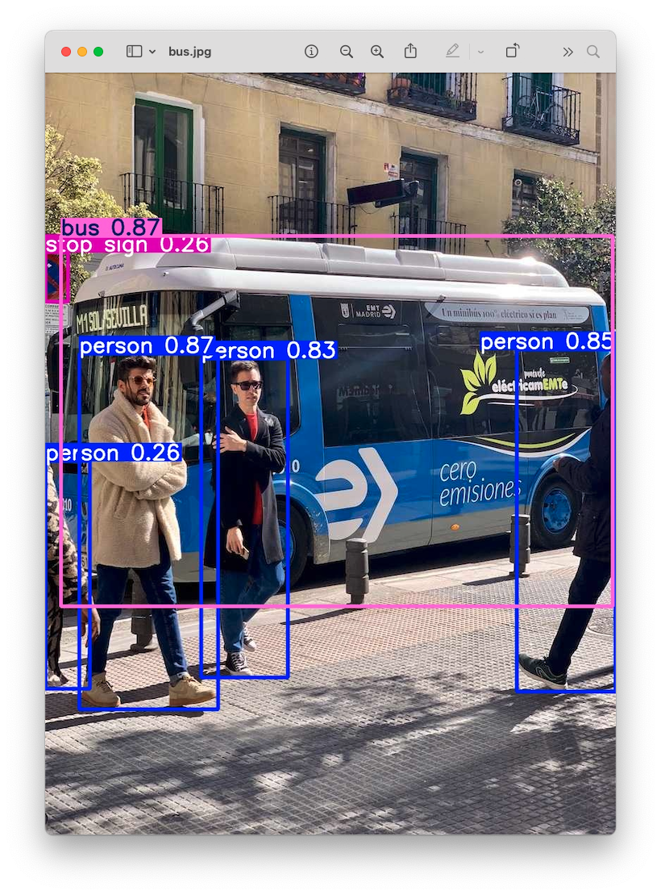
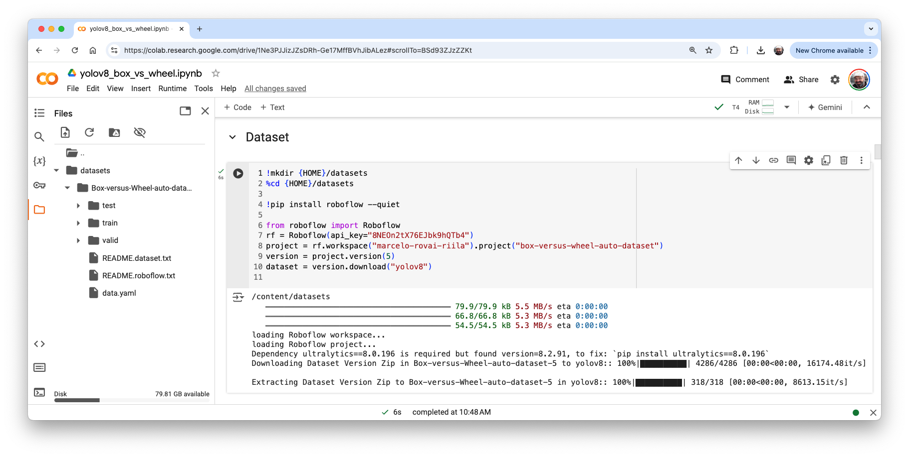
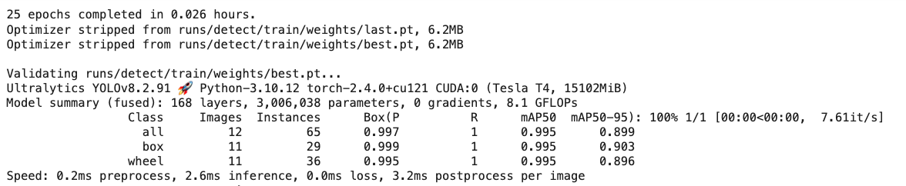
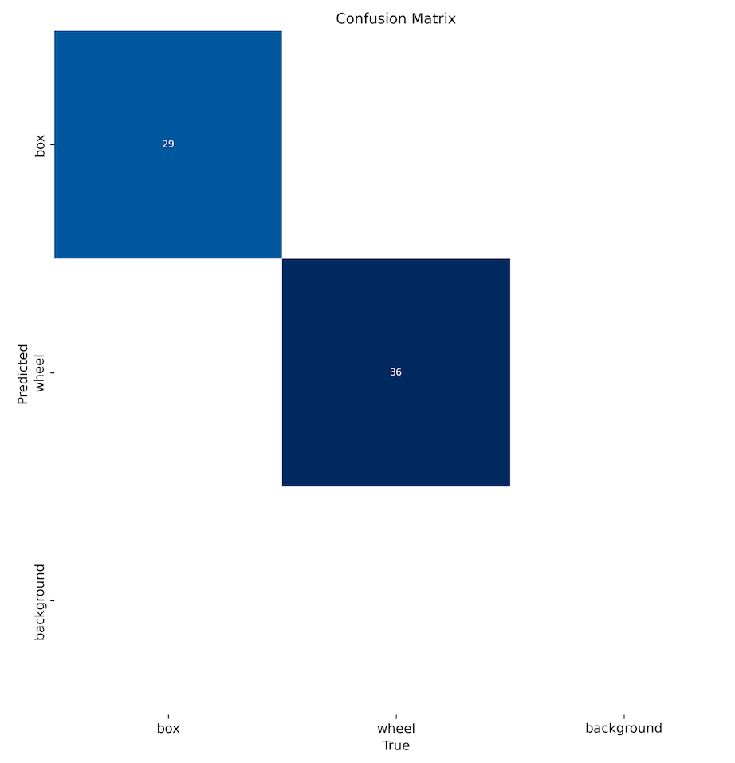

Computer Vision Applications with YOLO
Exploring a YOLO Models using Ultralitics
In this chapter, we will explore YOLOv8 and v11. Ultralytics YOLO (v8 and v11) are versions of the acclaimed real-time object detection and image segmentation model, YOLO. YOLOv8 and v11 are built on cutting-edge advancements in deep learning and computer vision, offering unparalleled performance in terms of speed and accuracy. Its streamlined design makes it suitable for various applications and easily adaptable to different hardware platforms, from edge devices to cloud APIs.
Talking about the YOLO Model
The YOLO (You Only Look Once) model is a highly efficient and widely used object detection algorithm known for its real-time processing capabilities. Unlike traditional object detection systems that repurpose classifiers or localizers to perform detection, YOLO frames the detection problem as a single regression task. This innovative approach enables YOLO to simultaneously predict multiple bounding boxes and their class probabilities from full images in one evaluation, significantly boosting its speed.
Key Features:
Single Network Architecture:
- YOLO employs a single neural network to process the entire image. This network divides the image into a grid and, for each grid cell, directly predicts bounding boxes and associated class probabilities. This end-to-end training improves speed and simplifies the model architecture.
Real-Time Processing:
- One of YOLO’s standout features is its ability to perform object detection in real-time. Depending on the version and hardware, YOLO can process images at high frames per second (FPS). This makes it ideal for applications requiring quick and accurate object detection, such as video surveillance, autonomous driving, and live sports analysis.
Evolution of Versions:
- Over the years, YOLO has undergone significant improvements, from YOLOv1 to the latest YOLOv12. Each iteration has introduced enhancements in accuracy, speed, and efficiency. YOLOv8, for instance, incorporates advancements in network architecture, improved training methodologies, and better support for various hardware, ensuring a more robust performance.
- YOLOv11 offers substantial improvements in accuracy, speed, and parameter efficiency compared to prior versions such as YOLOv8 and YOLOv10, making it one of the most versatile and powerful real-time object detection models available as of 2025
Accuracy and Efficiency:
- While early versions of YOLO traded off some accuracy for speed, recent versions have made substantial strides in balancing both. The newer models are faster and more accurate, detecting small objects (such as bees) and performing well on complex datasets.
Wide Range of Applications:
- YOLO’s versatility has led to its adoption in numerous fields. It is used in traffic monitoring systems to detect and count vehicles, security applications to identify potential threats and agricultural technology to monitor crops and livestock. Its application extends to any domain requiring efficient and accurate object detection.
Community and Development:
- YOLO continues to evolve and is supported by a strong community of developers and researchers (being the YOLOv8 very strong). Open-source implementations and extensive documentation have made it accessible for customization and integration into various projects. Popular deep learning frameworks like Darknet, TensorFlow, and PyTorch support YOLO, further broadening its applicability.
Model Capabilities
YOLO models support multiple computer vision tasks:
- Object Detection: Identifying and localizing objects with bounding boxes
- Instance Segmentation: Pixel-level object segmentation
- Pose Estimation: Human pose keypoint detection
- Classification: Image classification tasks
Ultralitics YOLO Detect, Segment, and Pose models pre-trained on the COCO dataset, and Classify on the ImageNet dataset.
Track mode is available for all Detect, Segment, and Pose models. The latest versions of YOLO can also perform OBB, which stands for Oriented Bounding Box, a rectangular box in computer vision that can rotate to match the orientation of an object within an image, providing a much tighter and more precise fit than traditional axis-aligned bounding boxes.

Available Model Sizes
YOLO offers several model variants optimized for different use cases, for example. The YOLOv8:
- YOLOv8n (Nano): Smallest model, fastest inference, lowest accuracy
- YOLOv8s (Small): Balanced performance for edge devices
- YOLOv8m (Medium): Higher accuracy, moderate computational requirements
- YOLOv8l (Large): High accuracy, requires more computational resources
- YOLOv8x (Extra Large): Highest accuracy, most computational intensive
For Raspberry Pi applications, YOLOv8n or YOLO11n are typically the best choice due to their optimized size and speed.
Installation
On our Raspi, let’s deactivate the current environment to create a new working area:
deactivate
cd ~
cd Documents/
mkdir YOLO
cd YOLO
mkdir models
mkdir imagesLet’s set up a Virtual Environment for working with the Ultralytics YOLO
python3 -m venv ~/yolo --system-site-packages
source ~/yolo/bin/activateAnd install the Ultralytics packages for local inference on the Raspi
- Update the packages list, install pip, and upgrade to the latest:
sudo apt update
sudo apt install python3-pip -y
pip install -U pip- Install the
ultralyticspip package with optional dependencies:
pip install ultralytics[export]- Reboot the device:
sudo rebootTesting the YOLO
After the Raspi booting, let’s activate the yolo env, go to the working directory,
source ~/yolo/bin/activate
cd /Documents/YOLOAnd run inference on an image that will be downloaded from the Ultralytics website, using, for example, the YOLOV8n model (the smallest in the family) at the Terminal (CLI):
yolo predict model='yolov8n' source='https://ultralytics.com/images/bus.jpg'Note that the first time we invoke a model, it will automatically be downloaded to the current directory.
The inference result will appear in the terminal. In the image (bus.jpg), 4 persons, 1 bus, and 1 stop signal were detected:
Also, we got a message that Results saved to runs/detect/predict. Inspecting that directory, we can see a new image saved (bus.jpg). Let’s download it from the Raspi to our desktop for inspection:

So, the Ultrayitics YOLO is correctly installed on our Raspberry Pi. Note that on the Raspberry Pi Zero, an issue is the high latency for this inference, which takes several seconds, even with the most compact model in the family (YOLOv8n).
Testing with the YOLOv11
The procedure is the same as we did with version v8. As a comparison, we can see that the YOLOv11 is faster than the v8, but seems a little less precise, as it does not detect the “stop sign” as the v8.
Export Models to NCNN format
Deploying computer vision models on edge devices with limited computational power, such as the Raspberry Pi Zero, can cause latency issues. One alternative is to use a format optimized for optimal performance. This ensures that even devices with limited processing power can handle advanced computer vision tasks well.
Of all the model export formats supported by Ultralytics, the NCNN is a high-performance neural network inference computing framework optimized for mobile platforms. From the beginning of the design, NCNN was deeply considerate of deployment and use on mobile phones, and it did not have third-party dependencies. It is cross-platform and runs faster than all known open-source frameworks (such as TFLite).
NCNN delivers the best inference performance when working with Raspberry Pi devices. NCNN is highly optimized for mobile embedded platforms (such as ARM architecture).
Let’s move the downloaded YOLO models to the ./models folder and thebus.jpg to ./images.
And convert our models and rerun the inferences:
- Export the YOLO PyTorch models to NCNN format, creating:
yolov8n_ncnn_modelandyolo11n_ncnn_model
yolo export model=./models/yolov8n.pt format=ncnn
yolo export model=./models/yolo11n.pt format=ncnn- Run inference with the exported models:
yolo predict task=detect model='./models/yolov8n_ncnn_model' source='./images/bus.jpg'
yolo predict task=detect model='./models/yolo11n_ncnn_model' source='./images/bus.jpg'The first inference, when the model is loaded, typically has a high latency; however, from the second inference, it is possible to note that the inference time decreases.
We can now realize that neither model detects the “Stop Signal”, with YOLOv11 being the fastest. The optimized models are more rapid but also less accurate.
Exploring YOLO with Python
To start, let’s call the Python Interpreter so we can explore how the YOLO model works, line by line:
pythonNow, we should call the YOLO library from Ultralitics and load the model:
from ultralytics import YOLO
model = YOLO('./models/yolov8n_ncnn_model')Run inference over an image (let’s use again bus.jpg):
img = './images/bus.jpg'
result = model.predict(img, save=True, imgsz=640, conf=0.5, iou=0.3)We can verify that the result is almost identical to the one we get running the inference at the terminal level (CLI), except that the bus stop was not detected with the reduced NCNN model. Note that the latency was reduced.
Let’s analyze the “result” content.
For example, we can see result[0].boxes.data, showing us the main inference result, which is a tensor with a shape of (4, 6). Each line is one of the objects detected, being the first four columns, the bounding boxes coordinates, the 5th, the confidence, and the 6th, the class (in this case, 0: person and 5: bus):

We can access several inference results separately, as the inference time, and have it printed in a better format:
inference_time = int(result[0].speed['inference'])
print(f"Inference Time: {inference_time} ms")Or we can have the total number of objects detected:
print(f'Number of objects: {len (result[0].boxes.cls)}')With Python, we can create a detailed output that meets our needs (See Model Prediction with Ultralytics YOLO for more details). Let’s run a Python script instead of manually entering it line by line in the interpreter, as shown below. Let’s use nano as our text editor. First, we should create an empty Python script named, for example, yolov8_tests.py:
nano yolov8_tests.pyEnter the code lines:
from ultralytics import YOLO
# Load the YOLOv8 model
model = YOLO('./models/yolov8n_ncnn_model')
# Run inference
img = './images/bus.jpg'
result = model.predict(img, save=False, imgsz=640, conf=0.5, iou=0.3)
# print the results
inference_time = int(result[0].speed['inference'])
print(f"Inference Time: {inference_time} ms")
print(f'Number of objects: {len (result[0].boxes.cls)}')
And enter with the commands: [CTRL+O] + [ENTER] +[CTRL+X] to save the Python script.
Run the script:
python yolov8_tests.pyThe result is the same as running the inference at the terminal level (CLI) and with the built-in Python interpreter.
Calling the YOLO library and loading the model for inference for the first time takes a long time, but the inferences after that will be much faster. For example, the first single inference can take several seconds, but after that, the inference time should be reduced to less than 1 second.
Inference Arguments
model.predict() accepts multiple arguments that can be passed at inference time to override defaults:
Inference arguments:
| Argument | Type | Default | Description |
|---|---|---|---|
source |
str |
'ultralytics/assets' |
Specifies the data source for inference. Can be an image path, video file, directory, URL, or device ID for live feeds. Supports a wide range of formats and sources, enabling flexible application across different types of input. |
conf |
float |
0.25 |
Sets the minimum confidence threshold for detections. Objects detected with confidence below this threshold will be disregarded. Adjusting this value can help reduce false positives. |
iou |
float |
0.7 |
Intersection Over Union (IoU) threshold for Non-Maximum Suppression (NMS). Lower values result in fewer detections by eliminating overlapping boxes, useful for reducing duplicates. |
imgsz |
int or tuple |
640 |
Defines the image size for inference. Can be a single integer 640 for square resizing or a (height, width) tuple. Proper sizing can improve detection accuracy and processing speed. |
rect |
bool |
True |
If enabled, minimally pads the shorter side of the image until it’s divisible by stride to improve inference speed. If disabled, pads the image to a square during inference. |
half |
bool |
False |
Enables half-precision (FP16) inference, which can speed up model inference on supported GPUs with minimal impact on accuracy. |
device |
str |
None |
Specifies the device for inference (e.g., cpu, cuda:0 or 0). Allows users to select between CPU, a specific GPU, or other compute devices for model execution. |
batch |
int |
1 |
Specifies the batch size for inference (only works when the source is a directory, video file or .txt file). A larger batch size can provide higher throughput, shortening the total amount of time required for inference. |
max_det |
int |
300 |
Maximum number of detections allowed per image. Limits the total number of objects the model can detect in a single inference, preventing excessive outputs in dense scenes. |
vid_stride |
int |
1 |
Frame stride for video inputs. Allows skipping frames in videos to speed up processing at the cost of temporal resolution. A value of 1 processes every frame, higher values skip frames. |
stream_buffer |
bool |
False |
Determines whether to queue incoming frames for video streams. If False, old frames get dropped to accommodate new frames (optimized for real-time applications). If True, queues new frames in a buffer, ensuring no frames get skipped, but will cause latency if inference FPS is lower than stream FPS. |
visualize |
bool |
False |
Activates visualization of model features during inference, providing insights into what the model is “seeing”. Useful for debugging and model interpretation. |
augment |
bool |
False |
Enables test-time augmentation (TTA) for predictions, potentially improving detection robustness at the cost of inference speed. |
agnostic_nms |
bool |
False |
Enables class-agnostic Non-Maximum Suppression (NMS), which merges overlapping boxes of different classes. Useful in multi-class detection scenarios where class overlap is common. |
classes |
list[int] |
None |
Filters predictions to a set of class IDs. Only detections belonging to the specified classes will be returned. Useful for focusing on relevant objects in multi-class detection tasks. |
retina_masks |
bool |
False |
Returns high-resolution segmentation masks. The returned masks (masks.data) will match the original image size if enabled. If disabled, they have the image size used during inference. |
embed |
list[int] |
None |
Specifies the layers from which to extract feature vectors or embeddings. Useful for downstream tasks like clustering or similarity search. |
project |
str |
None |
Name of the project directory where prediction outputs are saved if save is enabled. |
name |
str |
None |
Name of the prediction run. Used for creating a subdirectory within the project folder, where prediction outputs are stored if save is enabled. |
stream |
bool |
False |
Enables memory-efficient processing for long videos or numerous images by returning a generator of Results objects instead of loading all frames into memory at once. |
verbose |
bool |
True |
Controls whether to display detailed inference logs in the terminal, providing real-time feedback on the prediction process. |
Visualization arguments:
| Argument | Type | Default | Description |
|---|---|---|---|
show |
bool |
False |
If True, displays the annotated images or videos in a window. Useful for immediate visual feedback during development or testing. |
save |
bool |
False or True |
Enables saving of the annotated images or videos to file. Useful for documentation, further analysis, or sharing results. Defaults to True when using CLI & False when used in Python. |
save_frames |
bool |
False |
When processing videos, saves individual frames as images. Useful for extracting specific frames or for detailed frame-by-frame analysis. |
save_txt |
bool |
False |
Saves detection results in a text file, following the format [class] [x_center] [y_center] [width] [height] [confidence]. Useful for integration with other analysis tools. |
save_conf |
bool |
False |
Includes confidence scores in the saved text files. Enhances the detail available for post-processing and analysis. |
save_crop |
bool |
False |
Saves cropped images of detections. Useful for dataset augmentation, analysis, or creating focused datasets for specific objects. |
show_labels |
bool |
True |
Displays labels for each detection in the visual output. Provides immediate understanding of detected objects. |
show_conf |
bool |
True |
Displays the confidence score for each detection alongside the label. Gives insight into the model’s certainty for each detection. |
show_boxes |
bool |
True |
Draws bounding boxes around detected objects. Essential for visual identification and location of objects in images or video frames. |
line_width |
None or int |
None |
Specifies the line width of bounding boxes. If None, the line width is automatically adjusted based on the image size. Provides visual customization for clarity. |
Exploring other Computer Vision Applications
Let’s set up Jupyter Notebook optimized for headless Raspberry Pi camera work and development:
pip install jupyter jupyterlab notebook
jupyter notebook --generate-configTo run Jupyter Notebook, run the command (change the IP address for yours):
jupyter notebook --ip=192.168.4.210 --no-browserOn the terminal, you can see the local URL address and its Token to open the notebook. Copy and paste it into the Browser.
Environment Setup and Dependencies
import time
import numpy as np
from PIL import Image
from ultralytics import YOLO
import matplotlib.pyplot as pltHere we have all the necessary libraries, which we installed automatically when we installed Ultralytics.
- Time: Performance measurement and benchmarking
- NumPy: Numerical computations and array operations
- PIL (Python Imaging Library): Image loading and manipulation
- Ultralytics YOLO: Core YOLO functionality
- Matplotlib: Visualization and plotting results
Model Configuration and Loading
model_path= "./models/yolo11n.pt"
task = "detect"
verbose = False
model = YOLO(model_path, task, verbose)- Model Selection: YOLOv11n (nano) is chosen for its balance of speed and accuracy
- Task Specification: We will select
detect, which in fact is the default for the model. But remember that YOLO supports multiple computer vision tasks, which will be explored later. - Verbose Control: output model information during model initialization
Performance Characteristics
Let’s open the previous bus image using PIL
source = Image.open("./images/bus.jpg")And run an inference in the source:
results = model.predict(source, save=False, imgsz=640, conf=0.5, iou=0.3)From the inference results info, we can see that the first time an inference is run, the latency is greater.
# First inference
0: 640x480 4 persons, 1 bus, 7528.3ms
# Second inference
0: 640x480 4 persons, 1 bus, 2822.1msThe dramatic difference between the first inference (7.5s) and subsequent inferences (2.8s) illustrates:
- Model Loading Overhead: Initial inference includes model loading time
- Optimization Effects: Subsequent inferences benefit from cached optimizations
Results Object Structure
Let’s explore the YOLO’s output structure:
result = results[0]
# - boxes, keypoints, masks, names
# - orig_img, orig_shape, path
# - speed metricsBounding Box Analysis
result.boxes.cls # Class IDs: tensor([5., 0., 0., 0., 0.])
result.boxes.conf # Confidence scores
result.boxes.xyxy # Bounding box coordinates- Coordinate Systems: On
Result.boxes, we can get different bounding box formats (xyxy, xywh, normalized):- xywh: Tensor with bounding box coordinates in center_x, center_y, width, height format, in pixels.
- xywhn: Normalized center_x, center_y, width, height, scaled to the image dimensions, values in .
- xyxy: Tensor of boxes as x1, y1, x2, y2 in pixels, representing the top-left and bottom-right corners.
- xyxyn: Normalized x1, y1, x2, y2, scaled by image width and height, values in .
8. Visualization and Customization
The Ultralytics plot() can be customized to show as the detection result, for example, only the bounding boxes:
im_bgr = result.plot(boxes=True, labels=False, conf=False)img = Image.fromarray(im_bgr[..., ::-1])
plt.figure(figsize=(6, 6))
plt.imshow(img)
#plt.axis('off') # This turns off the axis numbers
plt.title("YOLO Result")
plt.show()Customization Options:
The plot() method in Ultralytics YOLO Results object accepts several arguments to control what is visualized on the image, including boxes, masks, keypoints, confidences, labels, and more. Common Arguments for plot()
- boxes (bool): Show/hide bounding boxes. Default is True.
- conf (bool): Show/hide confidence scores. Default is True.
- labels (bool): Show/hide class labels. Default is True.
- masks (bool): Show/hide segmentation masks (when available, e.g. in segment tasks).
- kpt_line (bool): Draw lines connecting pose keypoints (skeleton diagram). Default is True in pose tasks.
- line_width (int): Set annotation line thickness.
- font_size (int): Set font size for text annotations.
- show (bool): If True, immediately display the image (interactive environments).
Exploring Other Computer Vision Tasks
Instance Segmentation
model_path= "./models/yolo11n-seg.pt"
task = "segment"
model = YOLO(model_path, task, verbose)Note that a specific variation of the model, for instance segmentation, will be downloaded. Now, lt’s use another image for testing:
source = Image.open("./images/beatles.jpg")Display the image
plt.figure(figsize=(6, 6))
plt.imshow(source)
#plt.axis('off') # This turns off the axis numbers
plt.title("Original Image")
plt.show()And run the inference:
results = model.predict(source, save=False)
result = results[0]Display the result:
im_bgr = result.plot(boxes=False, conf=False, masks=True)
img = Image.fromarray(im_bgr[..., ::-1])
plt.figure(figsize=(6, 6))
plt.imshow(img)
plt.axis('off') # This turns off the axis numbers
plt.title("YOLO Segmentation Result")
plt.show()Pose Estimation
Download the model:
model_path= "./models/yolo11n-pose.pt"
task = "pose"
model = YOLO(model_path, task, verbose)Running the Inference on the beatles image:
source = Image.open("./images/beatles.jpg")
results = model.predict(source, save=False)
result = results[0]Showing the human pose keypoint detection and skeleton visualization.
im_bgr = result.plot(boxes=False, conf=False, kpt_line=True)
img = Image.fromarray(im_bgr[..., ::-1])
plt.figure(figsize=(6, 6))
plt.imshow(img)
plt.axis('off') # This turns off the axis numbers
plt.title("YOLO Pose Estimation Result")
plt.show()Training YOLO on a Customized Dataset
Object Detection Project
We will now develop a customized object detection project from the data collected and labelled with Roboflow. The training and deployment will be done in Python using a CoLab and Ultralytics functions.

We will use with YOLO, the same dataset previously used to train the SSD-MobileNet V2 and FOMO models.
As a reminder, we are assuming we are in an industrial facility that must sort and count wheels and special boxes.

Each image can have three classes:
Background (no objects)
Box
Wheel
The Dataset
Return to our “Boxe versus Wheel” dataset, labeled on Roboflow. On the Download Dataset, instead of Download a zip to computer option done for training on Edge Impulse Studio, we will opt for Show download code. This option will open a pop-up window with a code snippet that should be pasted into our training notebook.

For training, let’s choose one model (let’s say YOLOv8) and adapt one of the publicly available examples from Ultralytics, then run it on Google Colab. Below, you can find my adaptation:
- YOLOv8 Box versus Wheel Dataset Training [Open In Colab]
Critical points on the Notebook:
Run it with GPU (the NVidia T4 is free)
Install Ultralytics using PIP.

Now, you can import the YOLO and upload your dataset to the CoLab, pasting the Download code that we get from Roboflow. Note that our dataset will be mounted under
/content/datasets/:

- It is essential to verify and change the file
data.yamlwith the correct path for the images (copy the path on eachimagesfolder).
names:
- box
- wheel
nc: 2
roboflow:
license: CC BY 4.0
project: box-versus-wheel-auto-dataset
url: https://universe.roboflow.com/marcelo-rovai-riila/box-versus-wheel-auto-dataset/dataset/5
version: 5
workspace: marcelo-rovai-riila
test: /content/datasets/Box-versus-Wheel-auto-dataset-5/test/images
train: /content/datasets/Box-versus-Wheel-auto-dataset-5/train/images
val: /content/datasets/Box-versus-Wheel-auto-dataset-5/valid/imagesDefine the main hyperparameters that you want to change from default, for example:
MODEL = 'yolov8n.pt' IMG_SIZE = 640 EPOCHS = 25 # For a final project, you should consider at least 100 epochsRun the training (using CLI):
!yolo task=detect mode=train model={MODEL} data={dataset.location}/data.yaml epochs={EPOCHS} imgsz={IMG_SIZE} plots=True
The model took a few minutes to be trained and has an excellent result (mAP50 of 0.995). At the end of the training, all results are saved in the folder listed, for example: /runs/detect/train/. There, you can find, for example, the confusion matrix.

- Note that the trained model (
best.pt) is saved in the folder/runs/detect/train/weights/. Now, you should validate the trained model with thevalid/images.
!yolo task=detect mode=val model={HOME}/runs/detect/train/weights/best.pt data={dataset.location}/data.yaml The results were similar to training.
- Now, we should perform inference on the images left aside for testing
!yolo task=detect mode=predict model={HOME}/runs/detect/train/weights/best.pt conf=0.25 source={dataset.location}/test/images save=TrueThe inference results are saved in the folder runs/detect/predict. Let’s see some of them:

It is advised to export the train, validation, and test results for a Drive at Google. To do so, we should mount the drive.
from google.colab import drive drive.mount('/content/gdrive')and copy the content of
/runsfolder to a folder that you should create in your Drive, for example:!scp -r /content/runs '/content/gdrive/MyDrive/10_UNIFEI/Box_vs_Wheel_Project'
Inference with the trained model, using the Raspi
Download the trained model /runs/detect/train/weights/best.pt to your computer. Using the FileZilla FTP, let’s transfer the best.pt to the Raspi models folder (before the transfer, you may change the model name, for example, box_wheel_320_yolo.pt).
Using the FileZilla FTP, let’s transfer a few images from the test dataset to .\YOLO\images:
Let’s return to the YOLO folder and use the Python Interpreter:
cd ..
pythonAs before, we will import the YOLO library and define our converted model to detect bees:
from ultralytics import YOLO
model = YOLO('./models/box_wheel_320_yolo.pt')Now, let’s define an image and call the inference (we will save the image result this time to external verification):
img = './images/1_box_1_wheel.jpg'
result = model.predict(img, save=True, imgsz=320, conf=0.5, iou=0.3)Let’s repeat for several images. The inference result is saved on the variable result, and the processed image on runs/detect/predict8

Using FileZilla FTP, we can send the inference result to our Desktop for verification:

We can see that the inference result is excellent! The model was trained based on the smaller base model of the YOLOv8 family (YOLOv8n). The issue is the latency, around 1 second (or 1 FPS on the Raspi-Zero). Of course, we can reduce this latency and convert the model to TFLite or NCNN.
The model trained with YOLO11, has similar result as the v8,
Conclusion
This chapter has explored the YOLO model and the implementation of a custom object detector on a Raspberry Pi, demonstrating the power and potential of running advanced computer vision tasks on resource-constrained hardware. We’ve covered several vital aspects:
- Model Comparison: We examined different object detection models, including SSD-MobileNet, FOMO, and YOLO, comparing their performance and trade-offs on edge devices.
- Training and Deployment: Using a custom dataset of boxes and wheels (labeled on Roboflow), we walked through the process of training models with Ultralytics and deploying them on a Raspberry Pi.
- Optimization Techniques: To improve inference speed on edge devices, we explored various optimization methods, such as format conversion (e.g., to NCNN).
- Performance Considerations: Throughout the lab, we discussed the balance between model accuracy and inference speed, a critical consideration for edge AI applications.
AS discussed before, the ability to perform object detection on edge devices opens up numerous possibilities across various domains, including precision agriculture, industrial automation, quality control, smart home applications, and environmental monitoring. By processing data locally, these systems can offer reduced latency, improved privacy, and operation in environments with limited connectivity.
Looking ahead, potential areas for further exploration include: - Implementing multi-model pipelines for more complex tasks - Exploring hardware acceleration options for Raspberry Pi - Integrating object detection with other sensors for more comprehensive edge AI systems - Developing edge-to-cloud solutions that leverage both local processing and cloud resources
Object detection on edge devices can create intelligent, responsive systems that bring the power of AI directly into the physical world, opening up new frontiers in how we interact with and understand our environment.